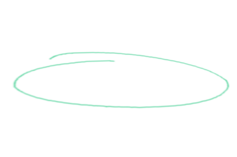

Nicholas LaMothe
web developer, etc.
The human mind is an open network of complex softwares working together.
- Sukant Ratnakar
The highest activity a human being can attain is learning for understanding, because to understand is to be free.
- Spinoza
Practice yourself, for heaven's sake in little things, and then proceed to greater.
- Epictetus
My name is Nick, and I am a web developer. Originally from BC, currently residing in Montreal, I've been studying programming for the last 3 1/2 years. Languages I have worked with: HTML/CSS, JavaScript, PHP, SQL, Java, C++, and Python.
That being said, the last three I can hardly claim to be experienced with, and I am especially unknowledgable about Python. Such is life. There are only so many abstractions that a brain can handle at any given time.
But, as time moves forward, the endless fragments of knowledge merge into heuristics, and of course heuristics are integrated forms of life. Patterned rituals encapsulating expertise. Pragmatic wisdom. Whatever one might call it.
Quick bio.
I used to be a boxer, and I've been illustrating semi-regularly my entire life. Thankfully, I no longer
box. Not good for the cerveau. Instead, I mostly run.
My background is originally in philosophy and English literature, with special interest in ethics, epistemology,
and philosophy of mind, but I've always been something of a tech nerd.
What else? I love food, cycling, chess, film, music (electronic/folk/prog/classical),
video games, nature, and the greatness of humanity. I also very much hope that we discover
intelligent life elsewhere in the universe.
You can find my resume here.

Projects section. To be continued.
This will probably include references to my previous website, among other small projects. I'll have to build it up over time.
Concern section. Just an idea. What goes in here?
My thought is that this will be a navigable little carousel or slider that will move through aphorisms or concerns that I have about the state of the world or the future. A way for the reader to get some insight into my state of mind, perhaps to start a conversation.
Optimism section. Looking forward to the good.
This could also be a carousel. I would like it to be a short list of things that we can look forward to, perhaps with references to articles that are cause for optimism. Maybe it would be an integrated sort-of blog of nerdy positivity. I am not sure.